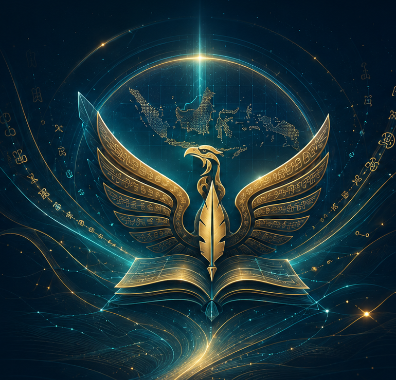
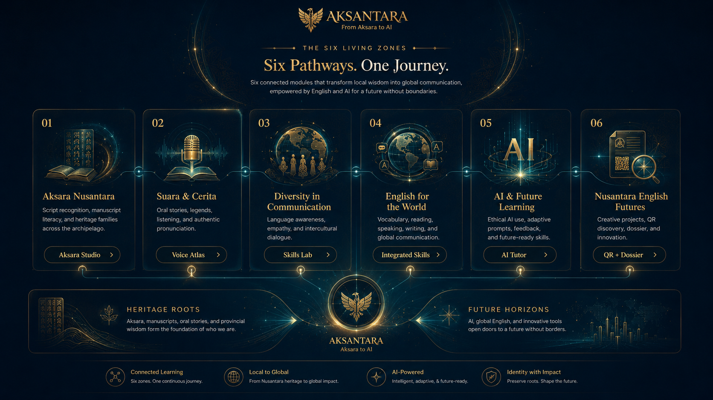

Nusantara English Futures
AKSANTARA
From Aksara to AI
A professional edu-cultural learning ecosystem that transforms provincial scripts, local wisdom, voice, and integrated English skills into one interactive Nusantara journey.

The Six Living Zones
Six Pathways. One Journey.
Six connected modules transform local wisdom into global communication, supported by English learning and ethical AI.

Interactive Nusantara Map
Province Hotspots
Select a province. Aksara Studio, Skills, Voice Atlas, AI Tutor, QR, and Admin update together.

Main Feature
Aksara Studio
Click samples or type using the Aksara keyboard. Use space, line break, delete, copy, save, and translate into English–Indonesian learning sentences.
Meaning / Translation:
Select or type aksara samples. Translation results will appear here.
Select or type aksara samples. Translation results will appear here.
Integrated English Skills
Skills Lab
Students complete task-based assessments in listening, speaking, reading, writing, vocabulary, and intercultural reflection.
Voice Atlas / Pronunciation
Voice Atlas
Province-based model lines, natural browser voice selection, local accent recording/upload, and intelligibility practice.
Pronunciation Focus
Practice Line
“Our local script and wisdom can speak to the world through English.”
Intelligibility Simulation
Ready
Ethical AI Learning Partner
AI Tutor
Offline tutor replies without API key. It uses selected province, script, wisdom, and current skill task.
Aksantara AI
Suggested Prompts
QR Discovery
QR Discovery
Every province has a scannable QR card connected to Aksara, wisdom, story, voice focus, and learning mission.
AKSANTARA
QR Details
Professional Dossier
Dossier
Compact boards. Click one to open the full visual.
Owner Console
Admin
Admin Lock / Unlock
Locked.